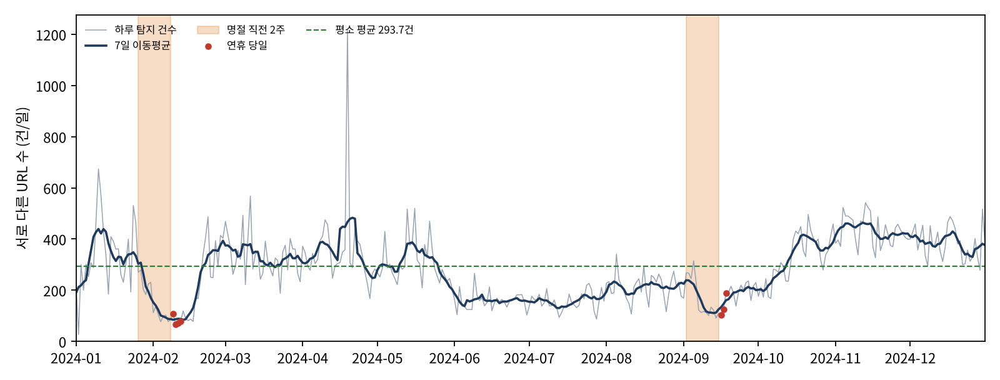

명절을 앞두고 정부는 택배·선물·안부 문자를 사칭한 스미싱에 대한 주의를 반복적으로 당부한다. 2024년에도 추석 연휴를 일주일 앞둔 9월 9일, 과학기술정보통신부 등 6개 기관이 합동으로 사이버사기 대응 요령을 발표하였다[1]. 2025년 설 연휴를 앞두고도 같은 취지의 경고가 발표되었다[2]. 언론에서는 "최근 3년간 명절 기간(1·2·9월)에 발생한 스미싱이 전체의 42.2%"라는 수치가 정부 발표를 인용하여 보도되기도 하였다[3]. 그러나 해당 보도는 수치의 원자료와 산출 방식, 그리고 그것이 단일 연도 값인지 3년 평균인지를 밝히지 않았다.
이처럼 "명절에는 피싱이 늘어난다"는 인식은 널리 공유되고 있으나, 누구나 재계산할 수 있는 공개 원자료로 이를 확인한 사례는 찾기 어렵다. 본 연구는 한국인터넷진흥원(KISA)이 공개한 피싱사이트 탐지 원자료를 이용하여 명절 연휴가 다가올 때 실제로 피싱사이트 탐지가 증가하는지를 검증한다.
Oest et al.(2020)은 대형 금융기관의 웹 기록 약 1,936만 건과 피싱 URL 404,628개(2018년 10월~2019년 9월)를 분석하여, 피싱 공격 1건이 첫 피해자 방문부터 마지막 방문까지 평균 약 21시간 지속되며, 보안 기관의 탐지는 첫 피해자 방문 후 평균 약 9시간 이내에 이루어진다고 보고하였다[4]. 이는 탐지 일자가 실제 유포 일자와 대체로 하루 이내의 차이를 가진다는 본 연구의 측정 가정을 뒷받침한다. Magdziarz와 Skrzypecki(2025)는 PhishTank, APWG, CERT Polska 세 데이터베이스(2009~2025년, 약 1,820만 건)를 비교하여, 동일 기간이라도 데이터베이스에 따라 피싱 건수의 추세가 다르게 나타남을 보였다[5]. 이는 피싱의 시기별 변화를 해석할 때 집계 대상과 자료원에 따른 차이를 함께 고려해야 함을 시사한다.
정리하면, 명절마다 경고가 반복된다는 점[1][2], 명절이 속한 달에 스미싱이 집중된다는 수치가 보도되었다는 점[3], 피싱은 유포 후 짧은 시간 안에 탐지되는 경우가 많다는 점[4], 피싱의 시기별 추이는 자료원에 따라 다르다는 점[5]은 이미 알려져 있다. 본 연구는 여기에 더해 2024년 KISA 탐지 자료에서 명절 연휴 직전 2주에 탐지가 증가하였는지를 사전에 확정한 기준으로 판정한다.
가설. 명절(설·추석) 연휴 직전 2주에는 KISA가 탐지하는 피싱사이트 수가 평소보다 많다.
독립변인은 해당 날짜가 명절 연휴 직전 2주에 속하는지 여부이며, 종속변인은 일별 탐지 피싱사이트 URL 수이다.
분석 자료는 공공데이터포털에 공개된 「한국인터넷진흥원_피싱사이트_20241231」이다[6]. 자료는 CSV(UTF-8) 형식이며 탐지날짜와 피싱사이트 URL의 두 항목, 총 131,752행으로 구성된다. 이용허락범위에 제한이 없으며, 2026년 10월 28일에 내려받았다. 파일의 SHA-256 값은 3e7341b501f16d8cb25e638ec4e276bfa474fd41153c053e7b47af9fc109deec이다. 읽기 오류 행, 2024년 외 날짜, 탐지 0건인 날은 모두 없었다.
<표 1> 변수 정의와 연구 설계
| 구분 | 내용 |
|---|---|
| 조작 조건 | 날짜가 속한 구간: 설 직전 2주(1/26~2/8), 추석 직전 2주(9/2~9/15), 평상시 |
| 통제 조건 | 단일 자료(2024년 KISA 탐지 자료), 분석 기간(2024-01-01~12-31), 집계 방식, 구간 길이 14일(요일 구성이 동일하여 요일 효과가 상쇄됨) |
| 종속변인 | 일별 탐지된 고유 URL 수. http://·https:// 접두어와 말미의 /를 제거하고 소문자로 정규화한 뒤, 동일 일자의 동일 URL은 1건으로 계산. 중복 제거 전 행 수를 보조 지표로 함께 산출 |
| 연휴 정의 | 설 2024-02-09~02-12(대체공휴일 포함), 추석 2024-09-16~09-18 |
| 평상시 | 2024년 366일 중 직전 2주(28일)와 연휴(7일)를 제외한 331일 |
| 표본 | 366일(일별 1값). 직전 2주 28일, 평상시 331일, 비교용 14일 구간 320개 |
판정 기준은 자료를 열람하기 전에 문서로 확정하였으며, 분석 과정에서 변경하지 않았다.
① 비율: 직전 2주 일평균 ÷ 평상시 일평균.
② 동일 길이 구간 비교(주 판정): 연휴와 겹치지 않는 2024년의 모든 연속 14일 구간(320개)의 일평균을 순위화하여, 각 명절 직전 2주가 상위 10%(32위 이내)에 포함되는지 확인한다.
③ 보조 검정: 직전 2주 28일과 평상시 331일을 맨-휘트니 U 검정(단측, 직전 2주가 더 크다)으로 비교하며, 유의수준은 0.05로 한다.
두 명절 모두 ②를 충족하고 ③이 유의하면 가설을 지지, 한 명절만 충족하면 부분 지지, 두 명절 모두 충족하지 못하면 기각으로 판정한다. 가설이 틀렸다면 직전 2주의 일평균은 연중 14일 구간 가운데 중간 이하에 위치하고, 검정의 p 값은 0.05 이상일 것이다.
<표 2> 구간별 일평균 탐지 건수와 판정 결과
| 구간 | 일수 | 일평균 (고유 URL) | 평상시 대비 | 14일 구간 순위 (320개 중) | 상위 10% 기준 | 보조: 행 수 기준 일평균(배율) |
|---|---|---|---|---|---|---|
| 평상시 | 331 | 293.7 | 1.00 | — | — | 378.2 (1.00) |
| 설 직전 2주 (1/26~2/8) | 14 | 156.1 | 0.53 | 306위 (하위 5%) | 미충족 | 179.2 (0.47) |
| 추석 직전 2주 (9/2~9/15) | 14 | 167.8 | 0.57 | 270위 (하위 16%) | 미충족 | 224.6 (0.59) |
자료: 저자 분석(out/daily_counts.csv, out/report.json).
<표 2>와 같이 두 명절 직전 2주의 일평균 탐지 건수는 모두 평상시보다 낮았다. 맨-휘트니 U 검정 결과 U = 1609.0, z = −5.74, 단측 p ≈ 1.00으로, 직전 2주가 평상시보다 많다는 근거는 나타나지 않았으며 값은 오히려 낮은 쪽에 분포하였다. 중복을 제거하지 않은 행 수 기준으로도 판정은 동일하였다(단측 p ≈ 1.00).

따라서 설과 추석 모두 주 판정 기준을 충족하지 못하였고 보조 검정도 가설 방향을 지지하지 않아, 본 연구의 가설은 기각되었다.
가설과 일치하는 결과는 관찰되지 않았다. 가설과 다르게 나타난 결과는 세 가지이다. 첫째, 두 명절 직전 2주의 일평균은 평상시보다 높지 않고 약 절반 수준이었다(0.53배, 0.57배). 둘째, 두 구간 모두 연중 14일 구간 가운데 하위권(306위, 270위)에 위치하였다. 셋째, [그림 1]에서 탐지 건수는 직전 2주 동안 점차 감소하여 연휴 당일에 최저치를 보였다.
이하의 확인은 결과를 확인한 이후에 수행한 사후 분석으로, 가설 판정에는 사용하지 않았다(explore.py, out/explore.json).
<표 3> 결과 차이에 대한 대안적 설명의 검토
| 대안적 설명 | 확인 방법 | 확인 결과 |
|---|---|---|
| (가) 연휴 중 탐지 업무 중단 | 연휴 당일 일별 건수 | 연휴 7일 모두 탐지가 이루어졌다(설 67~107건, 추석 104~189건). 다만 평상시 주말 평균(246.4건)보다도 크게 낮아, 공격 감소와 탐지 활동 감소를 본 자료로 구분할 수 없다. |
| (나) 계절적 추세 | 직전 2주와 전후 약 6주(직전 2주·연휴 제외) 비교 | 설은 156.1건 대 319.1건(53일), 추석은 167.8건 대 227.8건(57일)으로, 계절적 추세를 고려하더라도 직전 2주가 전후 기간보다 낮았다. |
| (다) 실제 발생량이 아닌 체감의 증가 | 본 자료로 확인 불가 | 명절에는 모여서 대화하는 사람이 많아 전해 듣는 사례가 늘어나므로, 실제 탐지량과 무관하게 체감 위험이 커질 수 있다. 실제 탐지량은 감소하였음에도 경고와 체감이 커지는 현상을 설명할 수 있는 가설로 남기며, 명절 전후 동일 응답자를 대상으로 한 설문으로 검증할 수 있다. |
| (라) 기존 보도와 집계 대상의 차이 | 보도[3]의 "1·2·9월 42.2%"와 대조 | 본 자료에서 1·2·9월의 비중은 20.1%로, 세 달이 연간 일수에서 차지하는 비율(24.6%)보다도 낮다. 다만 보도[3]는 문자 신고·차단 건수, 본 연구는 탐지 사이트 수를 집계하므로 직접 비교는 어렵다. 이는 자료원에 따라 시기별 결과가 달라진다는 선행 연구[5]와 같은 맥락이다. |
가설은 수정하지 않았다. 결과 확인 후 11~12월의 탐지량이 가장 많다는 점(11월 일평균 432.2건, 12월 385.3건)이 관찰되었으나, 이는 자료를 본 뒤 발견한 것이므로 본 연구의 결론으로 삼지 않았다. 다른 연도의 자료로 사전 기준을 정하여 별도로 검증할 후속 연구의 가설로 제시한다.
명절 직전에 피싱이 늘어난다는 경고는 2024년 KISA 탐지 자료에서는 확인되지 않았다. 사전에 정한 세 가지 기준 모두에서 명절 직전 2주는 평상시보다 많지 않았으며, 일평균은 오히려 평상시의 절반 수준이었고 전후 기간과 비교하여도 낮았다. 이 결과는 명절에 피싱에 대한 주의가 필요하지 않다는 의미가 아니라, 명절 직전에 탐지되는 피싱사이트 수가 증가하였다는 근거가 본 자료에는 없다는 의미이다. 명절 경고가 실제 발생량의 증가보다는 대화를 통해 전해 듣는 사례가 늘어나는 데서 오는 체감에 기반할 가능성을 후속 연구 과제로 제시한다.
첫째, 본 자료의 날짜는 유포 일자가 아닌 탐지 일자이다. 탐지가 유포 후 수 시간 내에 이루어지는 경우가 많다는 연구[4]가 있으나 국외·다른 연도 자료이며, KISA의 탐지 방식과 업무량 변화는 본 자료에 드러나지 않는다. 따라서 공격 자체가 감소하였다고 단정할 수 없다.
둘째, 본 연구는 문자 수가 아닌 사이트 수를 집계하였다. 하나의 사이트 주소로 다수의 문자가 발송되어도 1건으로 계산되므로, 이용자가 받은 문자 수의 변화는 알 수 없다.
셋째, 1개 연도와 명절 2회만을 분석하였으므로 결과를 연도 일반으로 확대할 수 없다.
넷째, 체감 증가에 대한 설명(<표 3>의 다)은 검증되지 않았다.
다섯째, Ⅳ장 2절과 3절의 내용은 사후 분석으로, 가설 판정에는 사용하지 않았다.
모든 문헌은 2026년 10월 28일에 원문 주소를 직접 열람하여 저자·연도·내용을 확인하였다. 확인 방법과 목록에서 제외한 문헌은 재현 패키지의 02_참고문헌과_확인기록.md에 수록하였다.
관심 분야는 피싱·스미싱이다. 최종 가설 외에 검토하였으나 채택하지 않은 후보와 그 이유는 다음과 같다.
<표 A1> 검토한 후보 주제와 제외 사유
| 후보 | 제외 사유 |
|---|---|
| 피싱 URL과 정상 URL을 구별하는 힘은 낯선 최상위 도메인이 단축 URL·사칭 단어보다 크다 | 일반 독자의 공감을 얻기 어려운 기술적 질문이며, 비교용 정상 URL 목록(인기 사이트 순위)이 문자로 전달되는 링크와 성격이 달라 비교의 공정성을 별도로 검토해야 함 |
| 월급날(25일 전후)에 피싱이 증가한다 | 기업마다 급여일이 달라 "월급날"을 단일하게 정의할 근거가 약함 |
| 주말보다 평일에 피싱이 많다 | 날짜가 탐지 일자이므로 주말 업무 감소와 실제 차이를 구분할 수 없음 |
| 연말 쇼핑철(11~12월)에 피싱이 증가한다 | 쇼핑철의 시작과 끝을 정하는 기준이 여러 가지여서 최종 가설보다 정의가 모호함 |
AI는 처음에 앱 판정 기준과 직접 연결되는 기술적 가설(피싱 URL 특징)을 제안하였다. 저자는 논문은 앱과 별개로 보고 보다 대중적인 질문을 다루기로 하였고, AI가 동일한 KISA 자료의 탐지날짜 항목으로 확인할 수 있는 시기 관련 가설 네 가지를 다시 제시하였다. AI는 주말·평일 비교가 탐지 업무의 영향을 받는다는 점을 지적하였으며, 같은 이유로 최종 가설은 연휴 당일이 아닌 직전 평일 기간을 보도록 정의를 좁혔다. 측정 정의와 판정 기준은 자료를 열람하기 전에 문서(01_가설과_설계_사전확정.md)로 확정하였다.
최종 가설을 선정한 이유는 세 가지이다. 해마다 보도되는 경고라 누구나 공감하지만 자료로 확인된 사례가 드물고, 결과가 어느 방향으로 나오더라도 의미가 있으며, 공개 원자료 하나로 단기간에 검증할 수 있다.
| AI에게 맡긴 일 | 저자가 직접 판단한 일 |
|---|---|
| 후보 가설 제안, 자료 항목 확인, 분석·그림 스크립트 작성과 실행, 통계 계산, 문헌 검색과 원문 대조, 문장 초안 작성 | 기술적 가설 대신 대중적 가설로 방향을 전환한 것, 후보 중 최종 가설을 선택한 것, 결과 해석(연휴에도 탐지 업무는 중단되지 않을 것이라는 판단, 명절에 모여 대화하면서 전해 듣는 사례가 늘어난다는 설명), 결론 문장을 채택한 것 |
재현 패키지 ZIP을 풀고 해당 폴더에서 다음 명령을 실행한다(Python 3.9 이상; analysis.py와 explore.py는 표준 라이브러리만 사용하며, 그림 생성에만 matplotlib이 필요하다).
python analysis.py data/kisa_phishing_20241231.csvpython explore.pypython make_figure.py
첫 명령의 출력에 "rows_read": 131752, 설 "rank": 306, 추석 "rank": 270, "verdict": "기각"이 나타나면 본 논문과 같은 결과이다. 원자료를 새로 내려받는 경우 공공데이터포털 주소[6]에서 받은 뒤 SHA-256 값이 Ⅱ장 1절의 값과 같은지 먼저 확인한다.